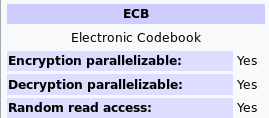

https://en.wikipedia.org/wiki/Block_cipher_mode_of_operation#ECB
General notes
Encrypts each block with the same key
Same plaintext blocks encrypt to same ciphertext blocks
Attackers can use this to identify blocks of plaintext that repeat
See bottom for visual example of issue with same data blocks
Electronic Code Book Mode
The simplest of the encryption modes is the Electronic Codebook (ECB) mode (named after conventional physical codebooks[10]). The message is divided into blocks, and each block is encrypted separately.


The disadvantage of this method is a lack of diffusion. Because ECB encrypts identical plaintext blocks into identical ciphertext blocks, it does not hide data patterns well. In some senses, it doesn't provide serious message confidentiality, and it is not recommended for use in cryptographic protocols at all.
A striking example of the degree to which ECB can leave plaintext data patterns in the ciphertext can be seen when ECB mode is used to encrypt a bitmap image which uses large areas of uniform color. While the color of each individual pixel is encrypted, the overall image may still be discerned, as the pattern of identically colored pixels in the original remains in the encrypted version.
ECB mode can also make protocols without integrity protection even more susceptible to replay attacks, since each block gets decrypted in exactly the same way.

You can demonstrate this using [ecb_encrypt_image]